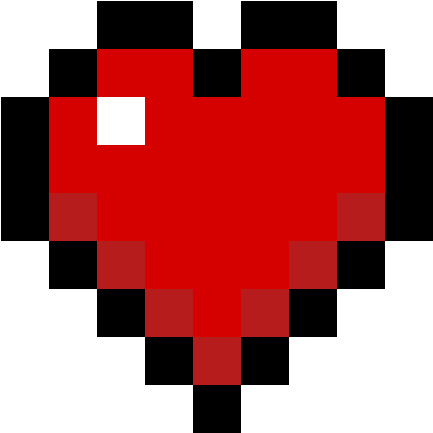

Quando eu te conheci, minha vida era como um beco escuro, daqueles em que a gente caminha sem saber para onde ir, sem enxergar uma saída e sem encontrar motivos para continuar. Meus dias eram pesados demais, tudo parecia perder o sentido, e eu já estava cansado de existir daquela forma. Eu só queria que alguma coisa acontecesse, que Deus, de alguma maneira, ouvisse minhas orações e me livrasse de toda aquela dor. Eu não sabia mais como sair daquele lugar, nem imaginava que alguém pudesse me encontrar nele.
Até que, em um dia qualquer, desses que parecem não significar nada, eu conheci você. Talvez tenha sido obra do acaso, talvez o universo tivesse seus próprios planos, ou talvez tenha sido apenas uma coincidência bonita demais para ser esquecida. O fato é que, sem perceber, você começou a fazer parte dos meus dias de uma maneira que eu jamais imaginaria.
Quando eu estava cansado de tudo, era você quem aparecia com uma mensagem, me chamando para jogar, me arrancando daquele lugar escuro por algumas horas e me dando motivos para sorrir quando eu já nem lembrava direito como era isso. Você me ajudava a escapar da minha própria cabeça, mesmo sem saber o quanto eu precisava disso. E o mais triste, e talvez uma das coisas que mais me marcam quando olho para trás, é perceber que você também estava naquele mesmo lugar escuro. Enquanto tentava me tirar de lá, você também estava lutando contra os seus próprios demônios.
A depressão tem maneiras diferentes de machucar cada pessoa. Naquela época, eu não sabia lidar com o que sentia, e acabava descontando em você coisas que nunca deveriam ter sido suas. Eu te maltratava, mesmo sem querer, porque, de alguma forma, eu tinha aprendido a me fechar para não sentir mais nada. Era como se, depois de tanta dor, meu coração tivesse se tornado incapaz de sentir qualquer coisa sem medo. Mas, cara, você foi uma das pessoas que conseguiram amolecer aquilo de novo. Você me fez sentir carinho, me fez sentir saudade, me fez sentir medo de perder alguém e, acima de tudo, me fez sentir amor outra vez. E eu não sei se algum dia vou conseguir te explicar o tamanho disso.
Cara, tu é o melhor amigo que eu poderia ter. E quero que você saiba que nada, absolutamente nada, vai apagar você da minha vida. Não importa o que aconteça, quantas dificuldades apareçam ou quantas vezes a vida tente colocar distância entre nós, você sempre vai ter um lugar aqui comigo. Você faz parte da minha história, de quem eu fui, de quem eu sou e de quem ainda estou me tornando. E existem pessoas que a gente simplesmente não consegue transformar em passado, porque elas se tornam parte da gente. Você é uma dessas pessoas para mim.
Eu sei que, às vezes, você carrega coisas demais nesse coração bobo aí. Sei que nem todos os dias são fáceis, que existem momentos em que até continuar tentando parece cansativo e que, por mais que você sorria, nem sempre dá para saber o que está acontecendo dentro de você. Mas eu quero que você se lembre de uma coisa: você não precisa enfrentar tudo sozinho. Nos dias bons, nos dias ruins, nas noites em que a cabeça não te deixar em paz e nos momentos em que você sentir que não aguenta mais, eu vou estar aqui. Talvez eu nem sempre saiba o que dizer, talvez eu não consiga resolver todos os seus problemas, mas eu posso te ouvir, te acompanhar e te lembrar de que você não está sozinho. Assim como você esteve comigo, eu também quero estar com você, irmão. Você merece receber o mesmo carinho que tantas vezes me ajudou a continuar.
É engraçado pensar que eu poderia nunca ter te conhecido. Que, se algumas pequenas coisas tivessem acontecido de maneira diferente, talvez hoje nós fôssemos apenas dois desconhecidos vivendo vidas completamente separadas, sem nunca imaginar que um dia poderíamos significar tanto um para o outro. E, sinceramente, eu não consigo mais imaginar minha vida sem você. Seria como olhar para uma fotografia antiga e perceber que falta alguém importante nela. Como ouvir uma música que sempre fez parte da sua vida e descobrir que uma parte dela desapareceu. Você se tornou uma dessas presenças que a gente nem percebe quando chegam, mas que, quando olha para trás, entende que mudaram tudo.
E é muito estranho olhar para trás e perceber o tanto de coisa que a gente viveu, KKKKKK. Cara, a gente cresceu junto. Passamos por tantas fases, tantas mudanças, tantas conversas, tantas risadas e tantas dificuldades que, às vezes, parece que conheço você há muito mais tempo do que realmente conheço. E agora você já é um homem adulto de 18 anos. KKKKKKK. A mesma idade que você achou que eu tinha quando nos conhecemos. É quase engraçado pensar nisso, porque, de alguma forma, parece que uma parte de nós continua sendo aqueles dois moleques que se conheceram pela internet, sem fazer ideia de que aquela amizade se tornaria algo tão importante.
Eu espero que você nunca perca essa sua essência, mesmo que a vida tente mudar você de todas as maneiras possíveis. Você é alguém realmente incrível, e eu sei que você sabe disso. KKKKKKK. E, por mais que eu não goste muito de gente egocêntrica, acho que os opostos realmente se atraem, porque, apesar de sermos tão diferentes em tantas coisas, encontramos um jeito de nos entender. Talvez seja justamente isso que torne nossa amizade tão especial. A gente não precisa ser igual para se importar, não precisa pensar da mesma forma para permanecer e não precisa entender absolutamente tudo um sobre o outro para continuar escolhendo ficar.
E, para mim, uma das coisas mais bonitas da nossa amizade é que a gente nunca desistiu de verdade um do outro. Não sei se você já parou para perceber isso, mas, cara, KKKKKKK, a gente brigava por qualquer coisa, ficava mal, se afastava por um tempo e, de alguma maneira, acabava voltando. No dia seguinte, lá estávamos nós de novo, conversando como se o mundo não tivesse quase acabado na noite anterior. E acho que, no fundo, por trás de todas aquelas brigas bobas, existia um medo muito maior do que a gente conseguia admitir: o medo de perder uma amizade que significava demais. Porque era doloroso, cara. Era doloroso imaginar que, depois de tudo, poderíamos simplesmente deixar de fazer parte da vida um do outro.
Talvez a gente nunca tenha sido perfeito um com o outro, mas sempre encontramos uma maneira de ficar. E, para mim, isso vale muito mais do que uma amizade que nunca passa por dificuldades. Porque permanecer quando tudo é fácil não exige tanto quanto escolher alguém mesmo depois dos dias ruins, das palavras ditas sem pensar e dos momentos em que parece mais fácil ir embora. Nós erramos, crescemos, mudamos e continuamos aqui. E eu espero, de coração, que continuemos assim por muito, muito tempo.
Dizem que as amizades que ultrapassam cinco anos são aquelas que duram para sempre. Não sei se existe alguma verdade nisso, mas gosto de pensar que a nossa é uma dessas amizades que ainda têm muita história pela frente. E olha que tudo isso aconteceu através de uma tela. KKKKKKK. Às vezes, eu fico pensando em como vai ser quando finalmente nos encontrarmos pessoalmente, quando eu puder olhar para você e pensar em todas as coisas que vivemos até chegar naquele momento. Acho que vai ser uma sensação estranha, quase surreal, encontrar alguém que já faz parte de tantos capítulos da sua vida e perceber que, até então, vocês nunca estiveram frente a frente.
Eu espero que esse dia chegue logo. E espero que, quando chegar, seja apenas o começo de uma fase ainda mais bonita da nossa amizade. Quero que a gente tenha histórias para contar, momentos para lembrar, risadas para compartilhar e muitas outras fases da vida para acompanhar um do outro. Quero poder olhar para trás daqui a dez, vinte anos e lembrar de tudo isso com um sorriso no rosto, pensando em como foi bom não termos desistido um do outro.
E, apesar de tudo o que escrevi até aqui, acho que ainda existem coisas que eu nunca vou conseguir colocar em palavras. Porque como é que a gente explica o valor de alguém que chegou quando tudo parecia perdido e, sem nem perceber, se tornou uma das razões pelas quais a vida ficou um pouco mais bonita? Como agradecer por uma amizade que me ajudou a atravessar momentos que eu nem sabia se conseguiria suportar? Como explicar que, entre tantas pessoas que poderiam ter passado pela minha vida, foi justamente você quem ficou?
Eu não sei responder a essas perguntas. Só sei que sou muito grato por ter te conhecido. Grato por cada mensagem, cada partida, cada conversa sem sentido, cada risada idiota, cada reconciliação e até mesmo por aquelas brigas que hoje parecem tão pequenas perto de tudo o que construímos. Sou grato por você existir e por, em algum momento da sua vida, ter encontrado um espaço para mim na sua.
No seu aniversário, eu desejo que a vida seja gentil com você. Que, mesmo depois de tudo o que você já enfrentou, ainda existam coisas bonitas esperando para acontecer. Que você encontre motivos para sorrir nos dias difíceis, pessoas que te acolham quando estiver cansado e lugares onde possa descansar o coração sem precisar fingir que está tudo bem. Que você realize seus sonhos, descubra coisas novas sobre si mesmo e tenha a oportunidade de viver tudo aquilo que merece. E, quando as coisas não saírem como você esperava, espero que você tenha paciência consigo mesmo e se lembre de que não precisa ter todas as respostas aos 18 anos. Você ainda tem tanta vida pela frente, irmão. Tantas histórias que ainda não viveu, tantos lugares que ainda não conheceu e tantas versões de si mesmo que ainda vai descobrir.
Acima de tudo, espero que você consiga enxergar em si mesmo a pessoa incrível que eu enxergo em você. Que nunca se esqueça de que sua existência importa, que sua presença faz diferença e que você é amado, inclusive nos dias em que não consegue sentir isso. E, se algum dia o mundo ficar escuro demais outra vez, lembra que você não precisa atravessar essa escuridão sozinho. Eu sei que não posso prometer que estarei sempre perto fisicamente, nem que vou saber resolver tudo, mas posso te prometer que a nossa amizade significa muito para mim e que vou fazer o possível para continuar cuidando dela.
Feliz aniversário, irmão.

Obrigado por ter aparecido na minha vida quando eu mais precisava, mesmo sem saber. Obrigado por ter me ajudado a encontrar um pouco de luz quando eu já estava cansado de procurar por ela. E obrigado por continuar aqui, apesar de tudo.
Se eu pudesse voltar àquele dia em que nos conhecemos, sabendo de tudo o que viveríamos, de todas as dificuldades, de todas as risadas e de tudo o que você se tornaria para mim, eu escolheria te conhecer de novo. Quantas vezes fossem necessárias.
Porque, no fim das contas, entre todas as coisas que poderiam ter acontecido naquela época, uma das mais bonitas foi ter encontrado você.
Eu te amo, irmão. Feliz 18 anos! Que esse seja apenas mais um de tantos aniversários que ainda vou ter a sorte de comemorar ao seu lado.